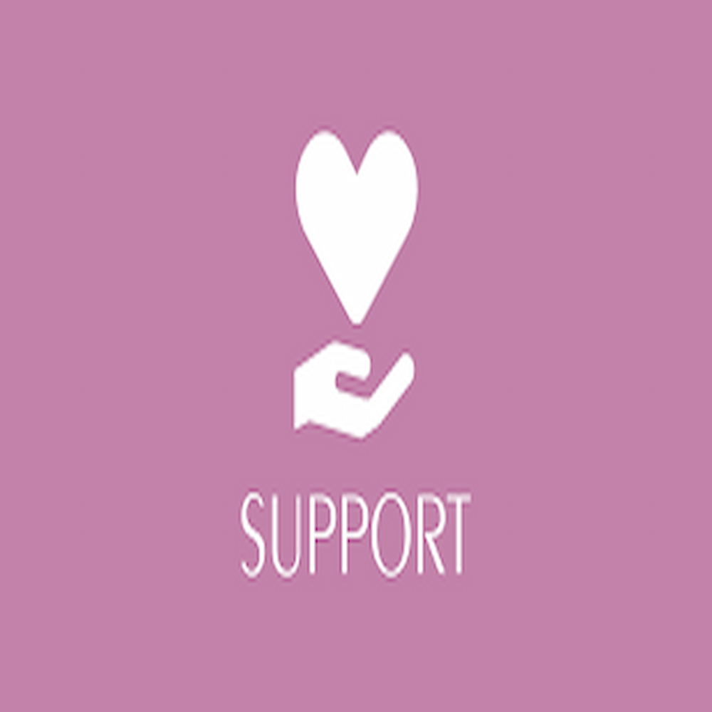
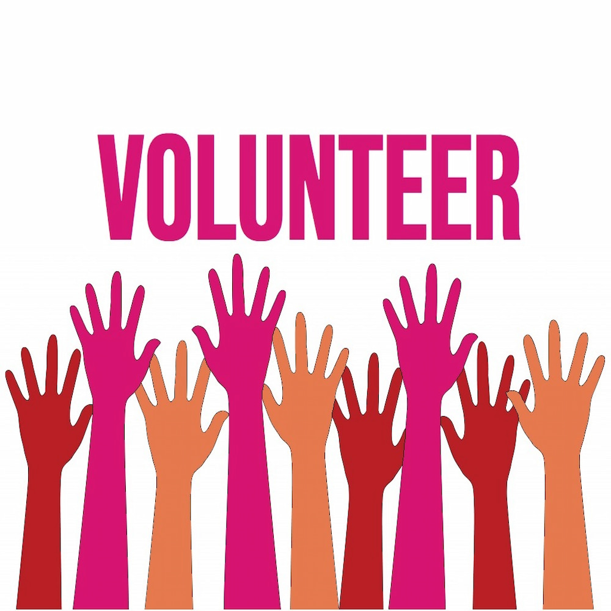

Support
There are various ways you can support the museum. Donations are
very welcome and are an important way we keep this museum open and
accessible to the whole community.
You can also support us by donating items of interest to the museum’s
collections.
If you have some item or collection that you think others would
enjoy, please let us know by contacting our Collections Department
and they will be able to assist you.

Volunteer
A number of people volunteer their time and effort to keep the
displays in good order and ready for visitors to come and enjoy.
Volunteering has its perks including getting to see behind the
scenes of a working museum, access to staff-only lectures, and a
monthly lunch where all staff and volunteers come together to
discuss ideas for future exhibits and strategies for the museum.
You can help volunteer in a number of different spheres. Please
contact us if you’d like to find out more about how you can get
involved.
Internships
Are you interested in working in a museum? Do you enjoy the fun and
excitement of sharing the wonders of nature with people?
Well you could be just the right person to enjoy an internship at
the museum.
You’ll be learning from a number of different academics and people
who are passionate about science and sharing it with the wider
community.